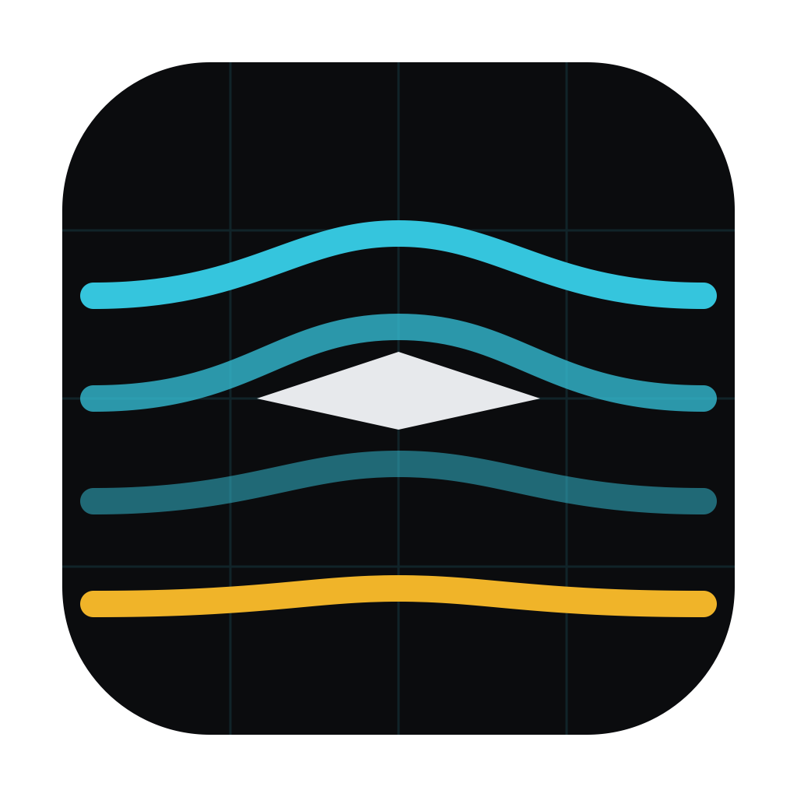
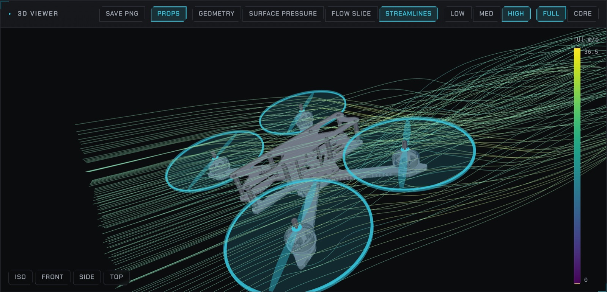
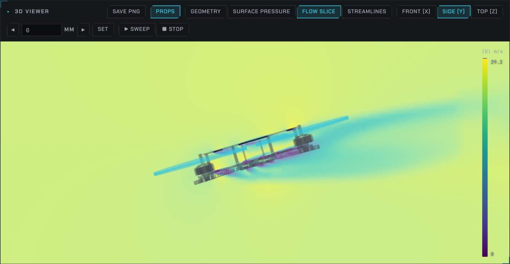
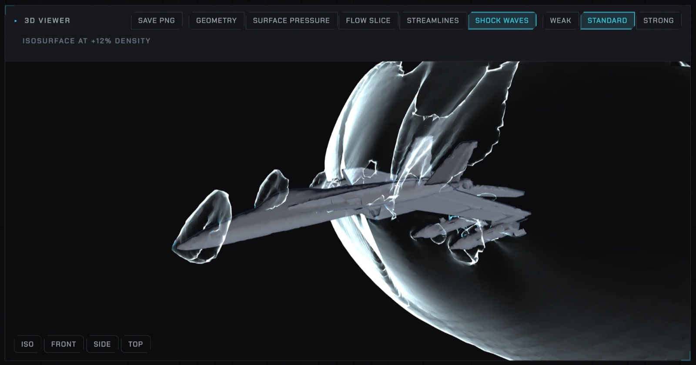

Slipstream
Drop in an STL — a wing, a car, a fairing, a whole aircraft.
Get a real wind tunnel analysis.
Free · runs on your Mac · powered by OpenFOAM
brew install --cask gerlero/openfoam/openfoam
brew install --cask --no-quarantine OwenTWebb/slipstream/slipstream
Screenshots



What it does
Real CFD, zero setup
Automatic meshing and a steady RANS solve (k-ω SST) sized to your model. Coarse compare-runs in ~3 min.
Numbers you can use
Cd, drag & lift forces, frontal area, pressure-vs-viscous breakdown, convergence quality.
See the flow
Surface pressure, movable slice planes with sweep animation, velocity-colored streamlines.
Attitude sweeps
Yaw or pitch sweeps with Cd-vs-angle charts, plus side-by-side run comparison.
Powered flight
For aircraft: propeller actuator disks show downwash and airframe download from real thrust values.
Past Mach 1
Compressible and supersonic solvers with a shock-wave view. Shock angles land within 3.5% of the exact solution.
Auto-trim
Give it weight and speed — it iterates CFD to find the forward-flight tilt and per-motor thrust.
Get flying in 3 steps
- Install OpenFOAM (the solver, one-time):
brew install --cask gerlero/openfoam/openfoam - Install Slipstream with the button or brew command above.
- Drop an STL, check the unit, set wind speed, hit Run analysis.